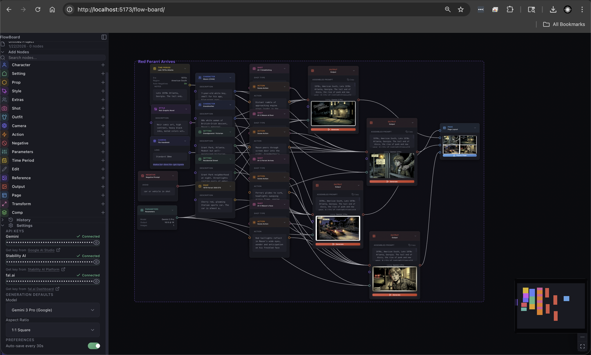

Teaching FlowBoard to Remember the Scene
A migrated seed post about turning FlowBoard workflows into reference-aware scene plans instead of isolated prompt fragments.

This seed post is migrated from the earlier w33s3 devlog because it captures a core FlowBoard idea that belongs in a dedicated product publication: visual memory. The work itself happened inside one of my creative pipeline repos, but the real subject was product behavior — how FlowBoard should carry continuity across a sequence of generated images instead of treating every prompt like a fresh start.
The problem is familiar if you have ever tried to generate a run of related images with AI. You can describe the same character, room, prop, and mood over and over and still watch the system drift. Faces change. Environments flatten out. The same scene starts to feel like a set of cousins instead of a coherent visual world. FlowBoard already helps by splitting prompts into reusable parts, but this iteration pushed further: those parts should remember actual references, not just text.
From prompt fragments to reference-aware workflows
The most important change was wiring explicit reference nodes into several FlowBoard JSON workflows. Instead of only connecting style, camera, action, setting, and text nodes, I started attaching portrait references for characters and image references for locations directly into the graph. That turns a workflow into something closer to a visual dependency map. A character node is no longer just a prose description. It can now be anchored to a specific portrait. A setting can now point at a real image of the room or location it is meant to preserve.
That sounds like a small structural change, but it shifts the product model. A node graph should not just be a prettier prompt editor. It should be the place where continuity lives. When I revisit a workflow later, I want to see not only what I asked the model for, but what evidence I gave it.

Upgrading the generation path
I also updated these workflows to target gemini-3-pro-image-preview instead of the older gemini-pro configuration. Some of that work is just richer project structure, but the meaningful shift is that the projects now preserve more information about model choice and reference connections. In practice, I am preparing FlowBoard for a generation path where reference fidelity matters more than clever prose.
That makes the system easier to reason about. If I am building a montage image and I care about the same character appearing across multiple beats, the workflow should show that requirement explicitly. It should not be hidden in a paragraph and left up to luck.
Why this belongs in a standalone FlowBoard blog
This is exactly the kind of update that tends to get undersold in a general portfolio devlog. It is not a flashy front-page feature, but it is real product work. FlowBoard gets more useful when it becomes a system for composing repeatable image logic rather than a set of one-off prompts wrapped in boxes.
The next step is making this less manual: clearer reference handling, better continuity tooling, and workflows that can explain why an output stayed on model or drifted off. That is slower work than a splashy feature sprint, but it is the kind of foundation that makes the rest of the product believable.
If FlowBoard is going to be useful for narrative image pipelines, it has to remember who is in the scene, where they are, and what visual world they belong to. This post is a good first seed for the standalone blog because it states that goal plainly.